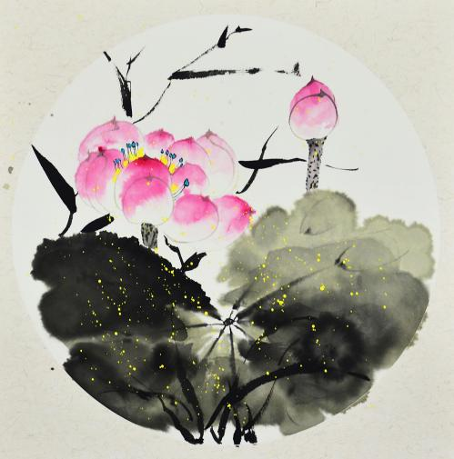
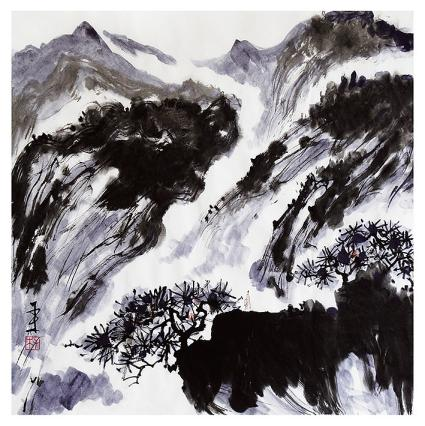
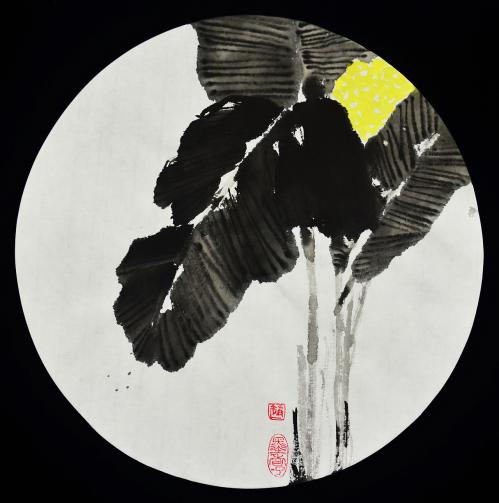

写意画是在长期的艺术实践中逐步形成的。其中文人参与绘画，对写意画的形成和发展起了积极的作用。相传唐代王维因其诗、画俱佳，故后人称他的画为"画中有诗，诗中有画"，他"一变勾斫之法"，创造了"水墨淡，笔意清润"的破墨山水。五代徐熙先用墨色写花的枝叶蕊萼，然后略施淡彩，开创了徐体"落墨法"。之后宋代文同兴"四君子"画风，明代林良开“院体”写意之新格，明代沈周善用浓墨浅色，陈白阳重写实的水墨淡彩，徐青藤更是奇肆狂放求生韵。经过长期的艺术实践，写意画代已进入全盛时期。经八大山人，石涛，李鱓，吴昌硕，齐白石、张大千，潘天寿,汪亚尘的弟子汪德祖,安平义君等并,李苦禅，朱宣咸,李可染,范曾等发扬光大，如今写意画已是影响最大、流传最广的画法。
写意画主张神似。董其昌有论：“画山水唯写意水墨最妙。何也？形质毕肖，则无气韵；彩色异具，则无笔法。”明代徐渭题画诗也谈到：“不求形似求生韵，根据皆吾五指裁。”
写意画用意第一。当代书画家南山乐山认为：“李太白有诗云：雁引愁心去，山衔好月来。意境极妙。一个引去加上一个衔来，用意极其饱满。画面张力足矣。是故，因无万里之心，故无万里之画。是为用意。夫写意者，无意而写何为？故用意第一。故曰笔不到意到。笔断意连，意断神连。尝闻米南宫用笔八面出锋；八极拳曰，拳打八方极远之地。其理一也。故此，其绘画的内涵更注重文以载道、遗形写神，其形式上更讲究个性的笔情墨趣、诗书画印的配合。”
大写意画以草书入画，体现了中国人独特的造型观和境界观。大写意画既是高度自我的艺术，又是高度忘我的艺术。有我与忘我看似相矛盾，其实是相统一的。只有有意识地追求大写意画这一独特的境界，才能真正将这门解衣磅礴的艺术发扬光大。大写意早在唐代就有以泼墨著称的画家王恰，到了南宋出现了写意画大家梁楷，开启了元明清写意人物画的先河，北宋山水画出现了富有诗情画意和文人情趣的米氏云山米芾/米友仁的山水小景，丰富了中国山水画的笔墨，揭开了写意山水的序幕。徐渭在水墨大写意花卉画方面创造性的贡献尤为突出。明以后，这种写意的美学主张已逐渐发展成熟为绘画史上代有传人的大写意画派。
画国画用的纸主要是宣纸，宣纸有三大类：①生宣。是未上过胶和矾的纸，渗透性大，吃水多，易渗化涸晕，适宜画写意画。生宣中的净皮单宣较好用。在净皮单宣上再加工，叫做特种净皮单宣，其质密软，面光平，特别好用，用来画画也顺手，既见线，又见墨色。 ②熟宣。在生宣纸上刷上一层白矾水便制成熟宣。矾有固定性，墨色在纸上不洇，适合画工笔画。 ③半生半熟的宣纸。是在生宣纸上加少量的矾制成。如煮硾宣，适合画半工笔半写意的画。 除宣纸外，还有高丽纸、皮纸、麻纸。皮纸产于浙江等地，物美价廉，便于出好线条，便于晕染。若用以画云，则层层晕染易制造气氛，不留痕迹，细腻美观。选用皮纸时，可以捏住画纸一角，轻轻抖动纸面，不带声响者为佳。 质优的宣纸应具备如下特色：松而不弛，紧而不实，光而不滑，润而不燥。易见浓淡干湿层次，经揉搓而无损坏。
笔有大、中、小、长、短、肥、瘦之分。写意人物画以用大、中型笔居多，很少用小型之笔。因为写意笔性粗松，大、中型之笔容易发挥这种特性，当然各人可按自己的画风和习惯去选定适合的笔型。
写意人物画大致可分为写意线描、写意着色、大写意3类。写意线描是写意人物画的重要基础专业课，也是可独立运用的表 现形式。写意线描，着重进行写意型人物画的观察方法、表现方法的最初训练，主要学习用笔课题，同时也研究用墨问题。写意着色，是写意人物画最常见的也是最常用的形式，是在写意线描学习的基础上进一步进行笔墨方法的训练，但重点应放在用色（包括颜料的性能、用色的技巧与艺术，色墨混用与对比、协调等）课题上。写意着色可从着色兼工带写入手，并逐渐放开用笔而进入一般着色意笔。着色方法也可先学淡彩着色再研究重彩的表现。大写意，是最大限度发挥写意人物画技法特性、相对难度较大的一种形式，一些传统的简笔、泼墨、泼彩、泼水等技法都可在大写意的大笔挥洒之中得到充分运用。
线描，是写生常用的一种技法，也是最简便的方法。这是一种单以粗细不同，刚柔相间、曲直有别、疏密相对、虚实相衬的线条来刻划形象的技法，也是国画技法中最古的一种。从西安半坡彩陶上就可以看到多变的线描鱼纹了，。拿这些生动的艺术形象和原始的鱼类化石来对照，可以说明这些鱼纹是具有现实主义和浪漫主义色彩的伟大创造。